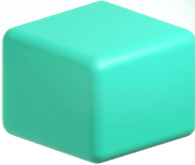
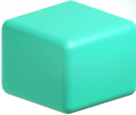

EMP_중위험_e
- 예치가능통화
- 원화
- 자문사
- 콴텍투자자문
자산배분전략
주식, 채권, 원자재, 금, 부동산 등 기대수익률과
위험수준이 다른 다양한 유형의 ETF에 분산투자하는 상품입니다.
 

콴텍 AI엔진을 적용해 시장 변동성 확대 구간에서
위험관리 알고리즘을 통해 위험자산의 비중을
효과적으로 조절합니다.
(정상 시장 예시)
중위험 상품의 경우 위험자산군
최대비중 50% 이내로 운용합니다.
최소 1,000만원(100만원 단위)
최소 2년 이상 권고
- 선후취형 : 선취 0.5% + 후취 0.6%
- 후취형 : 후취 0.7%
-
국내 상장 ETF를 활용한 자산배분전략을 통해 마음 편한 투자를 추구
※ 시장에서 오랜 기간 검증된 자산배분전략(주식/채권 6:4 포트폴리오, 올웨더 포트폴리오 등) 기반
-
주식, 채권, 원자재, 금, 부동산 등, 기대수익률과 위험수준이 다른 다양한 유형의 ETF에 분산투자하는 EMP 상품
※ EMP : ETF 포트폴리오(ETF Managed Portfolio)
-
‘콴텍투자자문’의 AI 엔진은 시장 변동성 확대 구간에서 위험관리 알고리즘을 통해 위험자산의 비중을 효과적으로 조절 → 일반적 자산배분형 상품과 차별화
-
수익 최대화가 아닌, 위험관리 기술을 바탕으로 투자자가 편안하게 장기투자의 성과를 누릴 수 있게 하는 것에 중점
정상 시장에서는 5개 주요 전략을 조합한 투자 자산배분 유지
시장의 하락, 급변 시 Robo-Advisor 기반 위험관리로 전환
정상 시장 시 6:4 자산 배분, 영구적 포트 폴리오, 골든 버터 플라이, 유대인 3분법, 올웨더 전략 자산배분 조합. 시장 위험 감지 시 콴텍의 Q-CRISIS INDEX 활용 2단계로 위험자산 비중 관리, 위험자산군(주식) 비중 축소 정상궤도 재진입 시 위험자산군 비중 정상화
콴텍 EMP 자산배분 현황(정상 시장), 주식 41% - 콴텍EMP 고위험(대형주 36.0, 중소형주 5.0, 장기채권 14.0, 중기채권 18.0, 금 12.5, 부동산 9.0, 현금 5.5), 주식 29% - 콴텍EMP 중위험(대형주 25.2, 중소형주 3.5, 장기채권 9.8, 중기채권 12.6, 금 8.8, 부동산 6.3, 현금 33.9)
콴텍은 신뢰할 수 있는 전략만을 선택합니다.
오랜시간 시장에서 실험과 검증이 완료된 전략들을 콴텍의 기술로 재구성해 어떤 상황에서도 안정된 성과를 낼 수 있는 포트폴리오를 만들었습니다.
Q : 만약 2005년부터 콴텍 RA 자산배분형 EMP 전략으로 투자했다면 투자 성과는?
A : 주가지수(KOSPI 200 및 S&P 500) 대비, 안정적인 수익을 달성하며 최대손실폭을 완화
| 성과지표 | 콴텍EMP (다소높은 위험) |
콴텍EMP (보통위험) |
KOSPI 200 |
S&P 500 |
|---|---|---|---|---|
| 기간 수익률 | 220.87% | 128.03% | 85.07% | 192.19% |
| 연평균(복리) 수익률 |
7.08% | 4.95% | 3.68% | 6.49% |
| 샤프 비율 | 1.01 | 1.00 | 0.29 | 0.43 |
| 소르티노 비율 | 1.64 | 1.61 | 0.45 | 0.67 |
| 최대 손실폭 | -16.87% | -12.09% | -52.92% | -56.78% |
| 연평균(복리) 수익률 |
(연)복리로 불어나는 자산의 특성을 반영한 수익률로 일반 투자자들이 사용하는 연환산 수익률과는 차이가 있음 |
|---|---|
| 샤프비율 | 위험 대비 초과수익률로서, 수치가 높을수록 동일한 위험(변동성)에 대해 보다 높은 수익을 달성한다는 의미 |
| 소르티노비율 | 위험 대비 초과수익률로서, 샤프 비율이 상승/하락 변동성 모두를 위험으로 정의하는 데 반해, 소르티노 비율은 하락 변동성만을 위험으로 정의 |
| 최대손실폭 | 투자기간 동안 자산 가격이 고점에서 저점으로 떨어진 낙폭(손실폭) 중 최대값 |
※ 상기 성과는 시뮬레이션 결과이며 실제 투자성과는 미래의 시장상황과 실제 운용성과에 따라 달라집니다.
※ 과거 성과가 미래의 수익을 보장하지 않는 점을 유의하시어 신중하게 투자를 결정하시기 바랍니다.
- 이 금융투자상품은 예금자 보호법에 따라 예금보험공사가 보호하지 않습니다.
- 신탁상품은 운용결과에 따라 투자원금의 손실이 발생할 수 있으며, 그 손실은 투자자에게 귀속됩니다.
- 가입하시기 전에 운용자산설명서의 주요내용을 반드시 확인하시기 바랍니다.